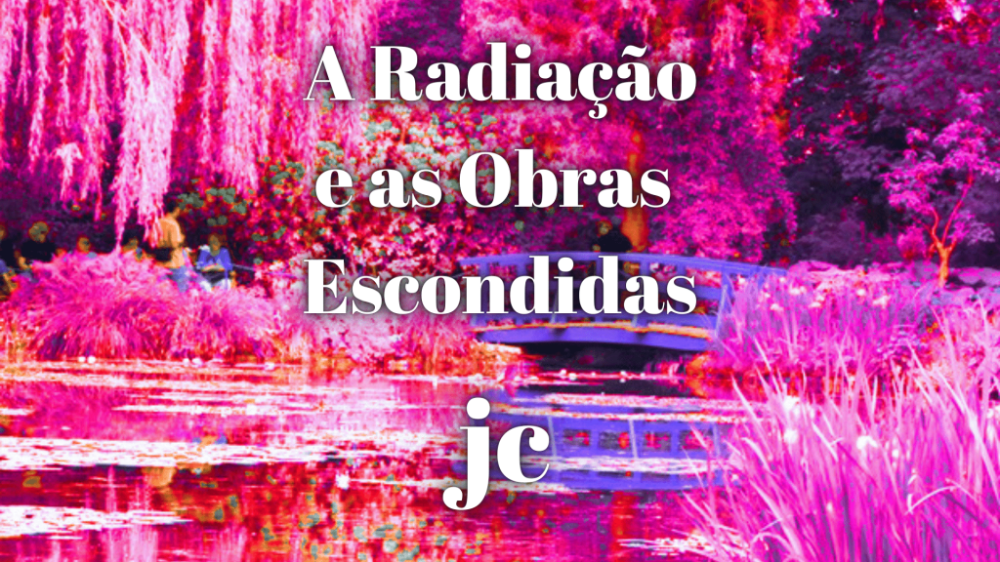

A radiação e as obras escondidas

Fonte: do autor
O uso adequado de radiações como luz visível, ultravioleta, infravermelho e raios-X possibilitam a investigação de obras de artes sem danifica-las. O uso combinado dessas radiações permite identificar a composição de tintas empregadas em pinturas e até mesmo distinguir camadas de tintas sobrepostas, não observadas a olho nu, que muitas vezes revelam pintura sobre pintura, ou mesmo, a presença de restauros.
Análise por Raio-X
Para dar ideia, uma análise com raios-X, que revela pintura sobre pintura, é a obra “Still Life With Meadow Flowers And Roses” de Vincent van Gogh. A análise mostra outra pintura, nas camadas internas, a imagem de dois lutadores. Outra obra do pintor que também revela pintura sobre pintura é a obra “Patch of Grass”, onde a análise mostra nas camadas internas uma mulher cuja identidade é desconhecida. Especialistas em arte acreditam que o artista reciclava suas telas para economizar dinheiro.
Já a obra “Madame X” de 1884, do pintor John Singer Sargent, quando foi analisada mostrou que ela foi alterada pelo próprio artista para se adaptar às normas morais da sociedade da época. A pintura foi considerada indecente por retratar uma dama em um vestido preto com uma das alças caindo de seu ombro. O pintor com medo de que sua pintura fosse destruída decidiu alterar a obra colocando a alça do vestido em seu devido lugar.
O Retrato da nobre italiana Isabella de’ Cosimo I de Medici do século 16 também foi alterado. Um restaurador decidiu tornar o rosto da dama mais jovem e bonito. Especialistas em arte acreditam que a tela foi alterada no século 19 para torná-la mais atraente e vendável. E nem a Mona Lisa possui uma tela para chamar de sua. Recentemente, o cientista francês Pascal Cotte descobriu e reconstruiu dois outros retratos debaixo da pintura de Mona Lisa. Os especialistas ainda não sabem se as pinturas escondidas mostram o processo criativo de Da Vinci ou são outras mulheres retratadas.
Desinfecção de obras de Arte
A radiação ionizante também é utilizada para tratar bens culturais biodeteriorados. Com exemplo temos o Irradiador Multipropósito de Cobalto-60 do Instituto de Pesquisas Energética e Nucleares (IPEN) que pode desinfetar inclusive obras de grandes dimensões, como já feito no acervo do Palácio dos Bandeirantes, com as pinturas de Alfredo Volpi, Clóvis Graciano, Tomie Ohtake, Manabu Mabe, Mário Zanini e Danilo Di Prete.
Outras Aplicações do Raio-X
Outros objetos artísticos como fotografias também podem ser analisados por radiação, com o objetivo de datar ou mesmo identificar copias. Uma coleção fotográfica, com foco na arquitetura paulistana, foi submetida à análise com raios-X e evidenciou o uso papel fotográfico com revestimento de barita e sais de prata, materiais muito utilizados por fotógrafos profissionais entre 1800-1900, compatíveis com a arquitetura registrada nas fotos, tornando possível a datação e autenticidade da coleção. Algumas dessas casas ainda existem embora tenham passado por reformas e outras, embora não existam mais, possuem registro na Prefeitura de São Paulo.
Assista ao vídeo e veja essas e outras surpresas que as investigações com radiação podem revelar.